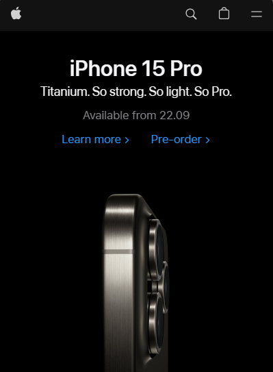
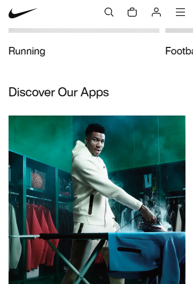
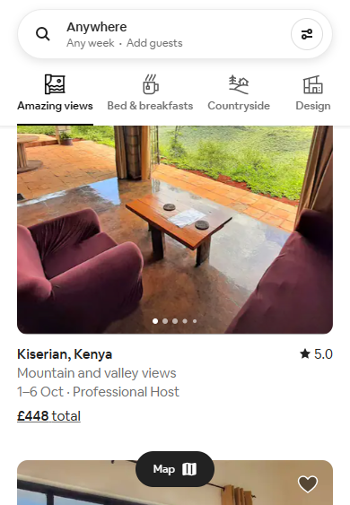

Visual Hierarchy
Organization/Company: Apple
Visit Website Description of How Visual Hierarchy is Exemplified:
The visual hierarchy on Apple’s UK website is a great example of how design can guide a user’s attention and make the browsing experience intuitive and enjoyable. Here are some ways it achieves this:
- Central Focus: The most important elements, such as the latest product or feature, are placed in the center of the homepage. This is often accompanied by a large, eye-catching image or graphic.
- Size and Typography: Apple uses size and typography to indicate the importance of different elements. The larger and bolder the text, the more attention it draws.
- Whitespace: The use of whitespace, or negative space, helps to focus the user’s attention on the central element. It also gives the website a clean, uncluttered look.
- Navigation Bar: The navigation bar is small and subtle, placed at the top of the page where users expect to find it. This allows users to easily navigate the site without distracting from the main content.
- Color and Contrast: Apple uses color and contrast to guide the user’s eye. For example, call-to-action buttons are often a different color from the rest of the page, making them stand out.
- Grid Layout: The website uses a grid layout, which organizes information in a way that’s easy to scan and understand.
- Balance and Symmetry: The website uses both vertical and horizontal visual hierarchies to create balance and symmetry, making it visually pleasing.
These design choices work together to create a clear visual hierarchy, guiding users’ eyes from the most important elements to secondary ones in a way that feels natural and intuitive.
Rule of Thirds
Organization/Company: Nike
Visit Website Description of How Rule of Thirds is Exemplified:
Nike exemplifies the Rule of Thirds as a design principle through the strategic placement and organization of its content and visual elements. The Rule of Thirds is a guideline in visual composition that divides an image or layout into nine equal parts using two equally spaced horizontal lines and two equally spaced vertical lines. The points where these lines intersect are considered key focal points. Here's how the website applies this principle:
- Header and Navigation: The top section of the website adheres to the Rule of Thirds by placing the Nike logo and navigation menu in the top third of the page. This positioning ensures that these critical elements are immediately visible and easily accessible to users.
- Hero Banner: The main promotional banner on the homepage is often placed in the upper third or lower third of the webpage. This banner typically features eye-catching visuals and product highlights, effectively drawing users' attention to the focal point within this grid.
- Product Placement: As you scroll down, you'll notice that product images and promotions within various sections often follow the Rule of Thirds by positioning them along the vertical and horizontal gridlines. This helps in highlighting the products and making them more visually appealing.
- Text and Content: Text blocks and content areas, such as product descriptions and feature highlights, are often organized within the grid created by the Rule of Thirds. This ensures that important information is placed in prominent areas where users are likely to focus their attention.
- Call-to-Action Buttons: Buttons like "Shop Now" or "Learn More" are strategically placed at the intersections of the gridlines, making them more noticeable and encouraging user interaction.
- Footer: Even the footer of the website often adheres to the Rule of Thirds by segmenting content into distinct sections, including links to important pages, customer support, and legal information.
By applying the Rule of Thirds in the layout and design of its webpages, Nike's website creates a visually balanced and aesthetically pleasing user experience. This principle helps guide users' attention to important elements and contributes to an overall more engaging and user-friendly interface.
White Space and Clean Design
Organization/Company: Airbnb
Visit Website Description of How White Space and Clean Design are Exemplified:
Airbnb's website showcases white space and clean design principles through:
- Ample White Space: Minimalistic layout with generous white space for an uncluttered and focused design.
- Clean Typography: Readable fonts, consistent sizes, and formatting for a cohesive look.
- Simple Navigation: Straightforward menus and icons for easy user guidance.
- High-Quality Imagery: Large, high-resolution images with well-spaced presentation.
- Limited Color Palette: Restrained color use with white, black, and subtle accents.
- Consistent Card Layout: Uniform card format for quick content comparison.
- Thoughtful Use of Icons: Sparingly used icons for visual cues without overwhelming.
- Mobile Responsiveness: Design adapts seamlessly to smaller screens for a user-friendly experience.
Airbnb's clean design prioritizes user experience, making it easy for visitors to explore listings and book accommodations.